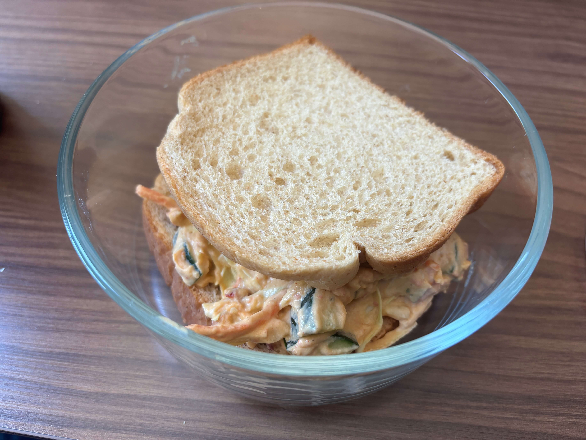

Home
Cucumber Hummus Spread

Ingredients
Serving: 2 wraps
- 2 (8-inch) whole-wheat tortilla or bread
- ½ cup hummus
- ⅔ cup thinly sliced cucumber
- 2 tablespoons low-fat plain yogurt
- 2 tablespoons pickle juice
- 2 tablespoons chopped herbs, such as dill, chives and/or parsley (optional)
- 1 ½ cups shredded green cabbage
Steps
- Spread 1 tortilla with ¼ cup hummus. Arrange ⅓ cup sliced cucumber across the tortilla.
- Stir 1 tablespoon yogurt, 1 tablespoon pickle juice and 1 tablespoon herbs (if using) together in a medium bowl. Add ¾ cup cabbage; toss to coat. Add the cabbage mixture on top of the cucumbers. Roll up the tortilla and cut in half before serving.